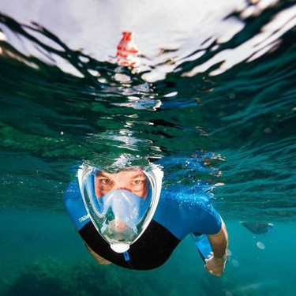

Tüpsüz dalış olarak ifade edilen su altı dalış ve gözlem niteliği taşıyan her türlü etkinliğin olmazsa olmazıdır şnorkel. Su yüzeyinin hemen altındaki balıkları izleme hobisinden tutun da yüzeye yakın batıkların izlenmesine,
su altı tarihi alanların gezilmesi etkinliklerinde hep şnorkel ön plandadır. Batıda bir bütün olarak şnorkelle yapılan aktivitelere “şnorkelling” adı verilerek bu faaliyet ayrı bir spor ve hobi etkinliği
olarak görülmekte bu kapsamda eğitim merkezlerinde dersler verilmektedir. Son yıllarda yaygınlaşan “sualtı hokeyi”, “sualtı ragbisi” gibi sporlar sayesinde şnorkel oldukça yaygınlaşan bir alet olarak öne çıkmaktadır.

Tüpsüz dalıştaki kullanım yaygınlığının yanı sıra tüplü dalışta( scuba) da hayli önemli bir ekipmandır şnorkel. Dalgıcın başının sol tarafında bulunan şnorkel tüp kullanımının gerektirmediği yüzeylerde gözlem yapılırken yahut
dalış noktasına gidilirken dalış noktasının tespiti için dalgıca oldukça yardımcı olmaktadır. Bir hobi ve dalgıçlık faaliyetinin yanı sıra en eski zamanlardan günümüze kullanılan zıpkınla balıkçılık tekniğinin en önemli ekipmanıdır.
Zıpkınla avlanan balıkçı su yüzeyinde şnorkel sayesinde sessizce keşif yaparken rahatlıkla balıkları görerek dalgalardan etkilenmeden avlanır. Yine komando eğitimlerinde , deniz , göl veya ırmaklarla çevrili alanlarda komandolara
yapacakları operasyonlar için şnorkel eğitimi verilerek doğal engellerin en aza indirilmesi sağlanır.